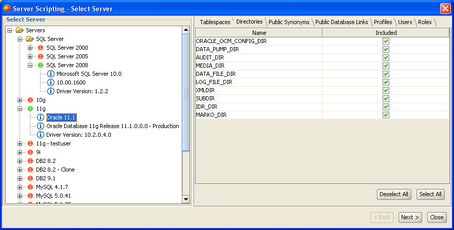
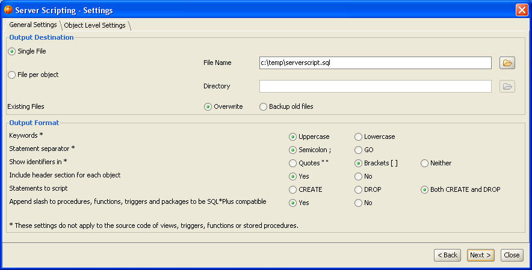
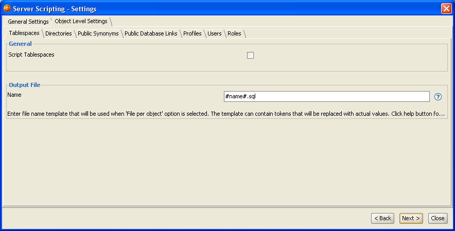
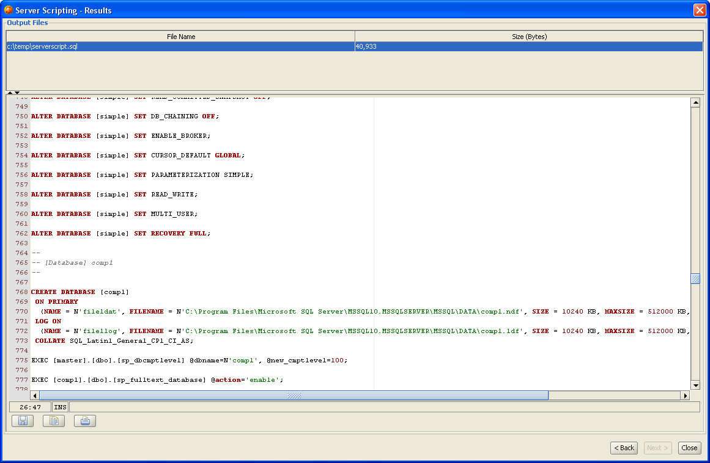

The Server Scripting Tool allows you to script CREATE and/or DROP SQL statements for server-level objects, such as users, roles and so on. The generated DDL scripts can then be archived or applied in a different environment to re-create the objects. The Server Scripting Tool is currently supported for Oracle, DB2 LUW, Sybase ASE, SQL Server and PostgreSQL. It is available, like all other DB Solo features, on all supported OS platforms including Windows, Linux and MacOS.
Currently the following object types are supported in the Server Scripting Tool:
You can invoke the SQL scripting tool from the Tools-menu.
The first page of the Server Scripting Tool lets you select the objects to be included in the script. First you need to select the server connection from the tree control on the left side of the screen. After clicking on the server on the left side, you will see several tabs on the right side of the screen, one for each supported object type. In each tab you can select individual objects to be scripted, by default all objects are selected. The 'Select All' and 'Deselect All' buttons allow you to quickly include all or none of the objects in the corresponding tab. After selecting the objects, click on the Next-button to move to the script settings screen.

The second screen of the Server Scripting Tool allows you to configure the output format andcontent. The screen is divided into two tabs, one contains seneral settings and the other one contains object-level settings.
General Settings
The Output Destination section of this screen lets you select if the generated DDL statements will be written to a single file or if one file per processed object will be generated. If you selecte the Single File-option, you must enter the name of the output file. If you select the 'File per object' option, you must enter the directory where the script files will be saved. In either case, you can also select how existing files will be handled, wherther the Script Generator will simply write over them or if they should be backed up first.
The Output Format-section lets you select formatting details for the generated scripts. The following options can be configured:

Object Level Settings
This screen contains a tab for each supported object type. Here you can configure settings that apply to the particular object type. All object types have the following settings:
| Token | Meaning |
|---|---|
| #name# | Name of the object (lowercase) |
| #NAME# | Name of the object (uppercase) |
| #dd# | Current day of the month (1-31) |
| #mm# | Current month of the year (1-12) |
| #yyyy# | Current year |
Once you have configured all the settings, click on the Next-button to start the script generation process. While the server scripting tool is generating the script for you, you can monitor the status in the progress dialog.

In the last screen of the server scripting tool you can view the resulting script(s). The upper part of the screen contains a list of files that were generated. If you selected the 'Single File' option on the settings screen, the upper panel will only contain one file, otherwise it will contain several files (if you selected more than one object to be scripted). Both the file name and its size in bytes is shown in the grid.
By clicking on the files in the results grid, you can bring up their contents in the lower part of the screen. The file contents panel allows you to save the SQL script to a different file, print the script or copy the script to the system clipboard. Once you are satisfied with the generated script, click on the Close-button to exit the Server Scripting Tool and return back to the main application.

| Back to Index |
DB Solo www.dbsolo.com support@dbsolo.com |